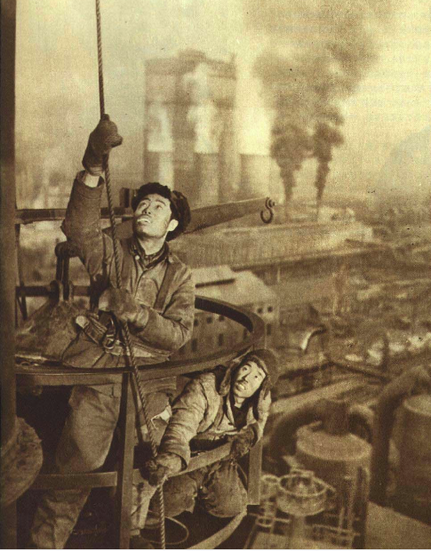
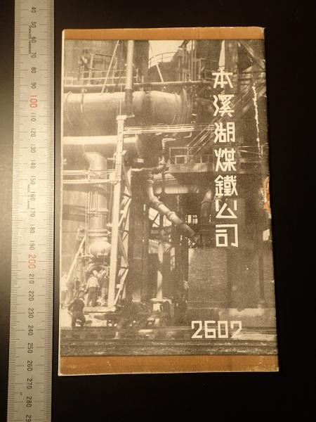
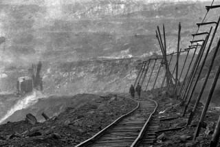
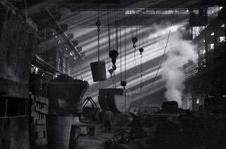
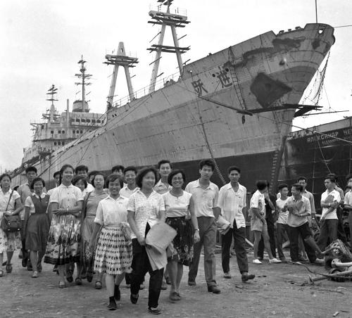

薪火相传：共和国工业的辉煌岁月
新中国成立之初，百废待兴。辽宁作为“共和国长子”，主动扛起了国家工业化起步的历史重任。在这里，不仅诞生了无数个“新中国第一”，更孕育了自强不息的工业精神，奠定了中国现代工业的坚实基础。

图1-1：1952年鞍山钢铁修建高炉，呈现“钢铁长子”的历史起点
1949年 / 1953年
新中国第一炉钢与三大工程
鞍山钢铁公司：作为新中国第一个大型钢铁联合企业，鞍钢被称为“中国钢铁工业的摇篮”。在极端艰苦的条件下，鞍钢炼出了新中国的第一炉钢。1953年，鞍钢大型轧钢厂、无缝钢管厂、七号炼铁炉“三大工程”更是令世界瞩目，为全国的基建提供了至关重要的原材料。
从滚滚红流的鞍钢高炉出发，工业化的炽热浪潮迅速向北蔓延，在沈阳铁西汇聚成一股前所未有的大国重器制造伟力。

图1-2：1942年本溪湖煤铁公司相关历史资料，呈现本溪煤铁工业的近代记忆
近代以来 / 新中国工业化时期
煤铁联合的矿冶根脉
本溪湖工业遗产群：本溪以煤、铁资源和近代工业企业遗存见长，是理解辽宁矿冶工业基础的重要入口。本溪湖煤铁公司相关旧址、老式机械设备和企业管理建筑，共同展示了从资源开采、冶炼加工到组织管理的完整链条，也提醒我们工业遗产不只属于生产车间，还包括制度、档案、安全记忆与劳动经验。
矿冶资源与钢铁生产构成基础，装备制造则把这种工业能力转化为机床、重机、车船等支撑全国建设的大国重器。

图1-3：1981年阜新海州露天矿历史影像，见证辽宁煤炭能源工业的生产场景
1901年建矿 / 1914年露天开采
能源矿山的工业支撑
抚顺与阜新矿区：煤炭曾是工业化起步阶段最重要的能源基础。抚顺西露天矿、阜新海州露天矿等矿业遗产，记录了煤炭开采、运输组织、设备维护和矿区生活的历史，也留下了资源型城市转型、矿坑生态修复与矿工记忆保护的新课题。
从煤炭能源到钢铁冶炼，再到装备制造，辽宁工业遗产共同构成了一条支撑共和国工业化起步的完整链路。

图1-4：1997年沈阳重型机器厂铸造车间，延续“东方鲁尔”的重工记忆
1953年 - 1957年（一五计划时期）
大国重器的核心引擎与装备基地
沈阳铁西区：作为“一五计划”国家重点建设的工业重镇，沈阳铁西区聚集了沈阳机床厂、沈阳铸造厂、沈阳重型机器厂等众多支柱型重工业企业。这里诞生了新中国的第一台车床、第一枚金属国徽，构筑了共和国完备的机械制造与重工防务骨骼体系，享有“东方鲁尔”的美誉。
而在辽宁南端的大连，这股钢铁力量则找到了面向海洋的突破口，用机车和巨轮拉响了向海而兴、奋力突围的时代汽笛。

图1-5：新中国第一艘万吨级远洋货轮“跃进号”，承接向海图强与装备制造的时代使命
1950年代（向海而兴）
机车摇篮与海洋防务的开路先锋
大连核心基地：大连凭借优越的沿海地理位置与雄厚的工业底蕴，成为共和国现代交通运输与海防装备的发源地。大连机车车辆厂率先研制出新中国第一台大功率大干线电力机车与内燃机车，拉动了全国铁路动脉；大连造船厂则成功建造了新中国第一艘万吨级远洋货轮，拉开了大国迈向深蓝海洋的序幕。
岁月更迭，这些燃尽韶华的机器虽已静止，但蕴含其中的红色根脉却在青年一代的数字化活化探索中重获新生。